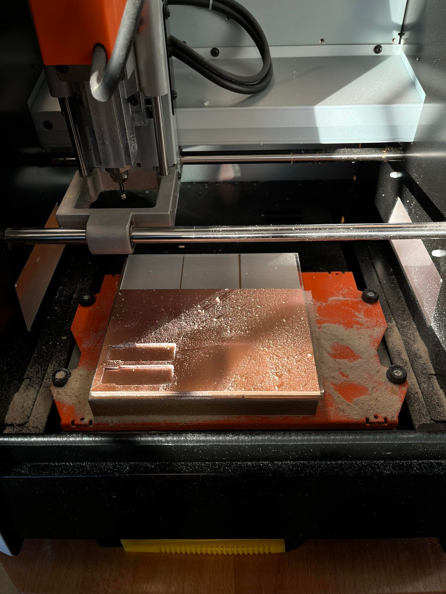
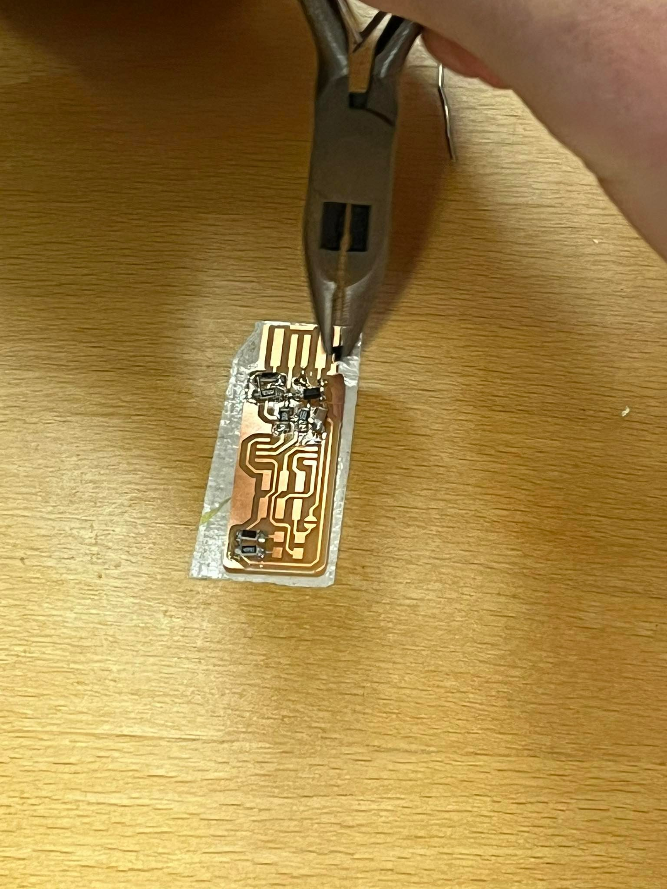
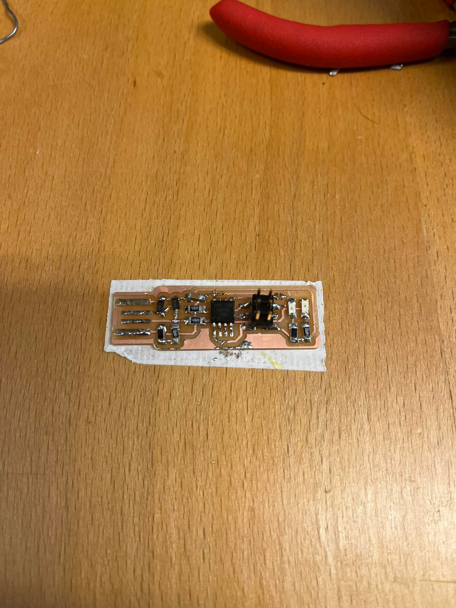
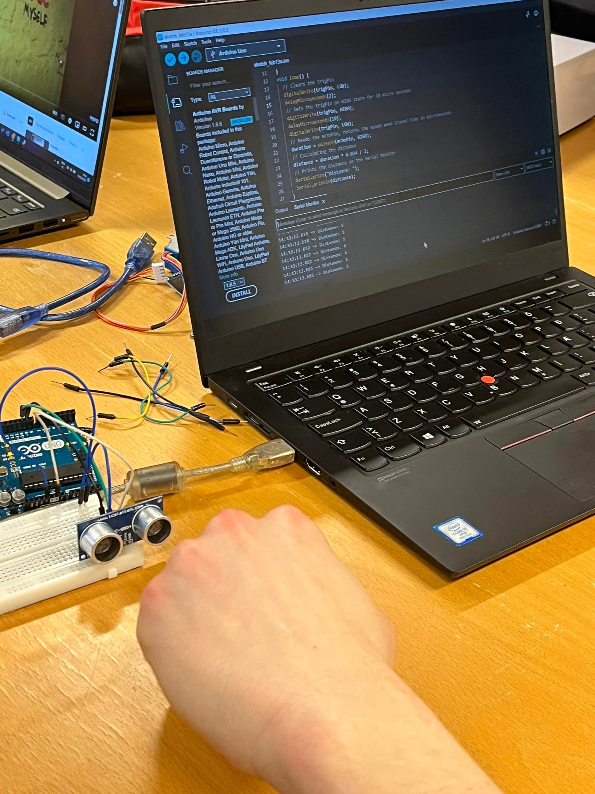
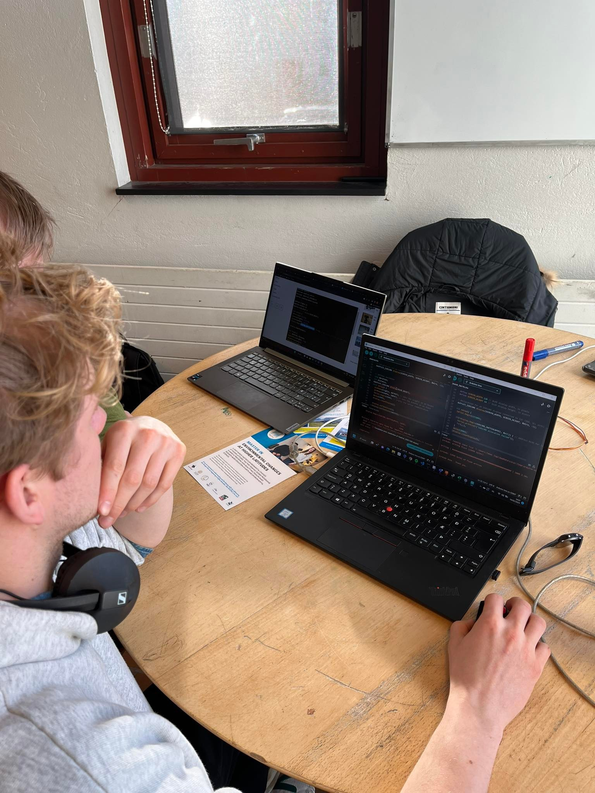

Aenean ornare velit lacus, ac varius enim lorem ullamcorper dolore aliquam.
I worked with Arnari, Gunnari og Tómasi.
The project consists of designing a circuit, manufacturing it, programming and learning to use input and output devices.
We had to design and manufacture the encoder but just solder the block, (that's the button :))). We used Eagle to design the channel and inkskape to create a png image of the channel which we used to generate the g-code for the router. Hafliði helped us adjust the mill.

After that we soldered all the components to the ciruit.
 
Then we tested the circuit with a meter to see if all the components are connected correctly.

Then, Hafliði helped us program the chip with the programmer and from there we could use the Arduino IDE to fiddle with the code and use the button to control the diodes.
In this part of the project we were to use the Arduino Uno to program things.
We decided to use were an oled screen and a distance sensor. We also got a breadboard to connect it all together. Our idea was to use the oled screen to show us what the distance sensor was reading.

We used Arduino IDE as the programe.
 
But we run into a bit of trouble configuring the Arduino IDE. But that was because we had the wrong "Comp" setting.
Here you can see it in action :)
Aenean ornare velit lacus, ac varius enim lorem ullamcorper dolore aliquam.

Aenean ornare velit lacus, ac varius enim lorem ullamcorper dolore aliquam.

Aenean ornare velit lacus, ac varius enim lorem ullamcorper dolore aliquam.
Sed varius enim lorem ullamcorper dolore aliquam aenean ornare velit lacus, ac varius enim lorem ullamcorper dolore. Proin sed aliquam facilisis ante interdum. Sed nulla amet lorem feugiat tempus aliquam.